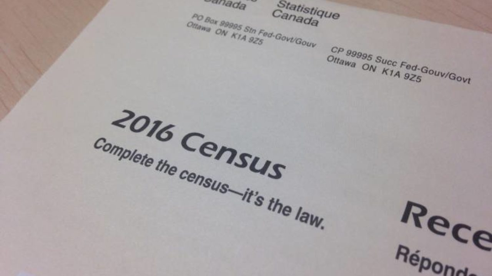

At times, using a sample of a population is preferable to observing everyone in a population. Researchers must consider three important questions when sampling:
The sample size must be large enough to produce statistically significant results. Sample size calculations must be performed at the design stage of the study. Researchers use statistical programs and mathematical techniques to help determine an appropriate number of participants for a study. These methods are beyond the scope of this course.
No matter the research topic, researchers need to define clearly the target population. Because there is no set of rules and regulations to follow, researchers must rely on logic and judgement when making their subject selection. In some cases, the entire population of interest may be sufficiently small that researchers can sample everyone. This type of research is called a census study because data are gathered on every member of the population.
Examples of census research may include a study involving all individuals over 105 years old in Alberta or all people with low levels of the skin pigment melanin (a condition known as albinism) in Canada.

(this link opens in a new window/tab)